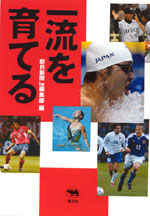
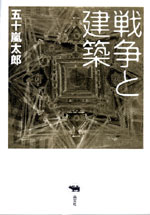
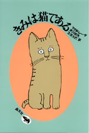
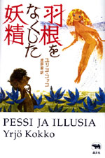

|

|
スポーツ・人材育成 |
||
| 一流を育てる | |||
| 朝日新聞be編集部 編 | |||
| 四六判 256頁 | |||
| 定価1575円（本体1500円） | |||
| ISBN4-7949- 6582-6 C0095 | |||
| サッカーの小野や稲本らは、才能をどう開花させたのか。早稲田大学ラグビー部はなぜ優勝できたのか。山口百恵という歌手はどう育てられたのか。野茂英雄を育てた野球の仲間たちとは？ 各界の一流選手を育てた25人の指導者の素顔と手腕を描く。人間の能力を発掘する極意がこの一冊に集まった！ 朝日新聞be（土曜日版）好評連載中の単刊本化。 | |||
|
|
|
|
|

|
建築 | ||
| 戦争と建築 | |||
| 五十嵐太郎 | |||
| A5判 256頁 | |||
| 定価2415円（本体2300円） | |||
| ISBN4-7949- 6580-X C0052 | |||
| 近代的高層ビルが崩壊した９.11は建築界でも大事件だった。連鎖するテロと戦争に建築は対抗出来るのか。その答えを求め、根源的な戦争と建築の関係を見つめ直す。古代ローマの要塞都市。第二次大戦時の建物偽装例。ハイテク都市防犯事情。NYグランドゼロ跡地開発。人智が凝縮した建築・都市から今何を学ぶべきか。気鋭の建築批評家による文明批評的都市論。 | |||
|
|
|
|

|
外国文学・ヤングアダルト | ||
| 必読系！ ヤングアダルト きみは猫である |
|||
| マグダ・レーヤ 米川和夫・左京久代訳 | |||
| 四六判 146頁 | |||
| 定価1680円（本体1600円） | |||
| ISBN4-7949- 1831-3 C0397 | |||
| ぼくはワルシャワに住む小学一年生。アパートに突然あらわれたきみは、仔猫を４匹生んじゃった。ママは大弱り。さあ、たいへん――。多感な少年の眼を通して語られる、人間と猫の家族の心あたたまる交流の物語。少年のやさしさとユーモアが全篇に流れる。猫好きな人、家族が猫好きな人、猫が好きな家族が好きな人に贈るポロネーズ。和田誠・絵。 | |||
|
|
|

|
外国文学・ヤングアダルト |
||
| 必読系！ ヤングアダルト 羽根をなくした妖精 |
|||
| ユリヨ・コッコ 渡部翠訳 | |||
| 四六判 244頁 | |||
| 定価1890円（本体1800円） | |||
| ISBN4-7949- 1832-1 C0397 | |||
| 雨上がりの朝、虹の国から妖精イルージアが迷いこんだ。見るもの聞くものすべてに心を奪われ、気づいたときには大切な羽根がちぎられていた！ 虹に戻れず悲嘆にくれる可憐な妖精をなぐさめたのは森のトロール、ペシだった――。無垢なふたりの冒険と森の生きものたちの生と死のドラマを、透きとおるような美しさで謳いあげたファンタジーの傑作。 | |||